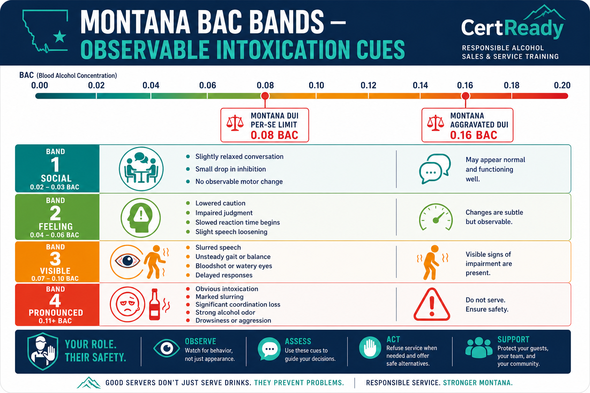

Recognizing Intoxication and Refusing Service
Montana's 'actually, apparently, or obviously intoxicated' standard and how to refuse cleanly
What you'll learn
- K4: Behavioral and physical signs of intoxication; Montana's two parallel service-side standards (MCA 16-3-301(4)(b) three-prong 'actually, apparently, or obviously intoxicated' AND MCA 16-6-304 single-prong 'apparently under the influence')
- P1: Identify behaviors that meet the Montana intoxication standard
- P6: Refuse service in a firm but respectful way; document in incident log
Module Overview
Same learner-facing video and podcast support as the CertReady course preview.
Video Review
Recognizing Intoxication: The Montana Standard
Podcast Overview
Spotting and Refusing the Visibly Intoxicated Customer
The media reinforces the lesson. The full module content below is the required training material.
Montana law uses TWO parallel tests for over-service. MCA 16-3-301(4)(b) prohibits selling alcohol to a person who is 'actually, apparently, or obviously intoxicated' — the three-prong phrase. 'Actually' covers a person who really is impaired — even if the signs are subtle. 'Apparently' covers a person who looks impaired to a reasonable observer; this is the standard that applies most often at the bar. 'Obviously' covers the loud, falling-down case that anyone could see from across the room. MCA 16-6-304 is a separate, broader prohibition: it bars selling, serving, or giving an alcoholic beverage to a person who is 'apparently under the influence of alcohol' (a single-prong test). The two statutes work together: refuse if either standard is met.
MCA 16-3-301(4)(b) (paraphrase, statutory phrase verbatim): Montana law prohibits selling or giving alcoholic beverages to "any person actually, apparently, or obviously intoxicated" — the bracketed three-prong phrase is the statute's exact operative language.
![Three-prong intoxication standard card: three side-by-side cards, each labeled with one prong — 'ACTUALLY' (the customer is, in fact, intoxicated regardless of appearance), 'APPARENTLY' (a reasonable server, seeing the customer's behavior, would conclude they are intoxicated), 'OBVIOUSLY' (the cues are so clear no reasonable person could miss them). Header: 'MCA 16-3-301(4)(b) — service refused if ANY prong is met.' Footer note: 'Civil dram-shop trigger under MCA 27-1-710 uses a different statutory standard (visibly intoxicated) — see Module 6.' Brand colors. Used as Module 3 anchor graphic.](../../img/MT-ALCOHOL-M03-s1-c2.png)
Practical translation. If you have any reasonable belief the person is impaired, the law treats that as enough. You do not need a breathalyzer. You do not need a confession.
The 'apparent' test is your professional judgment based on what the person is doing in front of you. The reason Montana wrote the standard this way is to give servers cover when they make the call: a court will not require you to prove a customer's exact BAC before refusing a pour. The standard is what a reasonable server would conclude.
Why the dual-statute approach matters. MCA 16-3-301(4)(b) gives the three-prong service-side test ('actually, apparently, or obviously intoxicated'). MCA 16-6-304 adds a separate, broader prohibition using a single-prong test ('apparently under the influence of alcohol'). The three-prong test asks a server to refuse not only on visible cues but also on what the server actually knows about the customer (e.g., the third double in 20 minutes); the single-prong test in 16-6-304 catches anyone who appears under the influence to a reasonable observer.
Tolerance does not change either standard. *Note: Montana's civil dram-shop trigger under MCA 27-1-710 uses yet a third statutory phrase — 'visibly intoxicated' plus 'knew or should have known' — covered in Module 6.*
BAC translates to behavior in roughly predictable bands. Module 2 covered the BAC physiology; here we tie it to what you actually see across the bar. The cues below are drawn from NHTSA driving-impairment research and the TIPS curriculum that most server-training programs use as a baseline.
You don't need to estimate exact BAC. You need to recognize the cluster of cues that puts a customer into the 0.08+ range — the legal-impairment line — so you can stop pouring before the bar is on the hook.
Behavioral cues
- Slurred or thick speech — words run together, S sounds soften, sentences trail off.
- Repeating the same story or question — the customer asks twice for the same drink, or tells you the same anecdote you already heard.
- Inability to focus eyes on the menu, the bar tab, or the person across the table.
- Loss of inhibition: louder than the room, overly familiar with you or other customers, jokes that cross lines they wouldn't normally cross.
- Mood swings between cheerful, weepy, and angry within minutes of each other.
- Bragging about consumption — "I've had six already and I'm fine" or "I can drive home, I just live around the corner."
- Aggressive or argumentative tone — picking fights with friends, complaining about prices they accepted earlier, challenging your refusal politely or rudely.

Physical cues
- Glassy, bloodshot, or droopy eyes — pupils may also dilate or react slowly to changes in light.
- Unsteady walk — bumping into chairs, grabbing the bar to balance, missing a stool when sitting down.
- Slow or uncoordinated hand movement — spilling drinks, fumbling cash, dropping a phone, struggling to grip a beer mug.
- Flushed face or sweating disproportionate to the room temperature.
- Strong smell of alcohol on the breath or coming from the body — present even when they're not drinking right then.
- Falling asleep at the bar — a customer who is dozing or 'micro-napping' between sips is past the cut-off line.
One sign isn't enough; a pattern is. A single bloodshot eye could be allergies. A loud laugh could be enthusiasm. The Montana 'apparent' standard is met when several cues stack: slurred speech AND unsteady walk, or loss of inhibition AND glassy eyes AND repetitive talking.
Train yourself to look for the cluster, not the single tell.
Early-warning cues (the 0.05–0.07 band)
- Customer becomes more talkative, leans further forward, makes more direct eye contact.
- Decision-making gets sloppier — orders the most expensive bottle, agrees to a bar tab they wouldn't agree to sober.
- Slight delay between question and answer — they're processing slower even though they sound coherent.
- Touches their face, hair, or the bar more often (small motor restlessness).
- These customers are not legally over-served yet. The early-warning cues are the moment to slow down rather than continuing pace.
Tolerance hides the visible cues, not the impairment. • A regular at 0.18 BAC may show none of the slurring, stumbling, or eye-glassiness. • Their motor cortex has trained around the alcohol — the surface signs disappear. • Their judgment, reaction time, and impairment are still compromised at the same BAC. • If you poured 6+ standard drinks into a 200 lb customer in 2 hours, the BAC math is fixed — regardless of how steady their walk looks. For service decisions, do not rely on "he looks fine" if drink count, pace, or behavior suggests impairment. (Civil dram-shop liability has its own statutory triggers under MCA 27-1-710 — covered in Module 6.)
Not every over-service problem starts at your bar. A customer who walked in from another establishment, a wedding reception, or a private party may already be in the 0.13–0.20 band before they order their first drink from you. Montana law (MCA 16-3-301(4)(b)) does not require you to know they drank elsewhere. It just requires you not to serve them while they meet the actual / apparent / obvious standard. Showing up impaired is on them; pouring the next drink is on you.
The bar-hopping reality. A bachelor party, a sports-team celebration, or a wedding reception will often arrive at your bar after 60–120 minutes of drinking elsewhere. Posture-check the group as they walk in: are anyone's eyes already glassy, anyone unsteady, anyone overly loud? The first 90 seconds at the door are the cleanest moment to refuse. Once you've poured a round, refusing the second is harder. Train your hostess and door staff to flag the group to the bartender before drinks land.
Refusing the first drink. Refusing someone who has not ordered yet feels weirder than refusing a fourth pint. Use simple language: "I'm not going to be able to serve you alcohol tonight, but the kitchen's open and water's on me." The tone is neutral. You're not making a moral judgment, you're describing what's going to happen.
If they push back, the answer is the same: "Tonight isn't going to work for alcohol — kitchen's open, water's on me." Repeat. Do not get drawn into a debate about how much they've had elsewhere.
Refusing service is the last step in a chain of choices. Before you cut someone off, you have several intervention tools that often work. Most customers respond well to friendly slowdowns when they feel the bartender is looking out for them rather than judging them.
The intervention ladder below is the standard TIPS / ServSafe Alcohol model with Montana-specific tweaks.
The intervention ladder
- Slow down. Stop checking back as fast. The next round 'takes a while.' Restock something. Take 5 extra minutes between visits to the table.
- Switch. Offer a non-alcoholic option. Water with lemon, a soda, a coffee, an N/A beer. Frame it as a favor: "Let me grab you a water in between, this round's a stronger pour."
- Food. Appetizers slow absorption and reset the conversation. "Kitchen's still open — want me to grab you wings or fries?"
- Refuse. A clean, kind, non-debate refusal of the next pour: "I'm going to switch you to water for the rest of tonight."
- Document. Write the refusal and any incident in the house incident log. The log protects the licensee under MCA 27-1-710 if there is ever a dram-shop claim.
Reading the room before you escalate. Before stepping up the ladder, take 30 seconds to gauge the rest of the table. Are friends signaling concern? Is the customer in a celebratory or a self-medicating mood? Are there kids nearby? Is the manager available if things turn? The right step on the ladder depends on the social context, not just the BAC. A wedding party that's having a good time responds well to step 1 (slow down) and step 3 (food).
A grieving solo customer at the bar may need step 4 (clean refusal) immediately, with the manager on standby.
Refusal scripts that work (and the ones that backfire)
- Works: "I'm going to switch you to water for a bit. I want to make sure you get home okay." — Caring, future-oriented, gives the customer a soft exit.
- Works: "Kitchen's still open — let me get you the burger. I'll bring water with it." — Reframes the situation around food, slows the next drink without sounding like a refusal.
- Works: "Tab's at $X. Let me close you out tonight and we'll catch you next time." — Polite finality. Use after the soft-touch attempts haven't landed.
- Works: "Mind if I call you a Lyft? On us." — Specific, no-friction, removes the only barrier most people raise.
- Backfires: "You've had enough." — Judgmental. Triggers defensiveness. The customer will argue.
- Backfires: "I can't serve you anymore." — True, but flat. Doesn't offer a path forward.
- Backfires: "Are you okay to drive?" — Open-ended question gets "yeah, I'm fine" 90% of the time. Substitute a specific offer instead.
- Backfires (and risky): "You're cut off!" said loudly across the bar — Public shaming escalates. The same message at table-side in a normal voice works fine.
The 30-second rule. When you decide to intervene, do it within 30 seconds of the trigger moment. A delay of even a minute makes it harder: the customer's tab grows, neighboring customers get drawn into the situation, and you start second-guessing yourself. The intervention is most effective when it's fast and conversational.
The customer barely notices it's happening — they just notice that you set down a water glass and never came back for the next drink order. That's the goal. The 'I' frame. Lead with "I" not "you." "I'm going to slow down on that next pour" lands far better than "You shouldn't have another one." The 'I' frame keeps the customer's ego out of it; the 'you' frame puts it center stage. Same outcome, very different reception. The 'we' frame for groups. If the customer is in a group and the group is also drinking, address the group: "Let me get you all some water and the menu — I've got a great post-drinking dessert tonight." The customer who's over-served gets the same de-escalation without being singled out.
Groups self-regulate when you give them a reason to.
Scenario 1: The friendly regular. A regular customer at the bar is on her fourth pint of a 7% Montana craft pale ale (so about 5.6 standard drinks over 2 hours). She's slurring slightly, getting louder, and asking for a fifth. She has a tab open.
She is friendly with you. She catches your eye and smiles.
Refusal scripts that work
- "I'm going to switch you to water for a bit. I want to make sure you get home okay."
- "I can't pour you another one tonight. Can I call you a Lyft? It's on us."
- "That's the law on me, not on you. I want to keep my license. Soda for the rest of the night?"
- "Tonight isn't going to work for alcohol. Kitchen's open and water's on me. Want to see the menu?"
Scenario 2: The friend trying to order around the cut-off. You've just cut off a customer at a four-top. One of his friends slides up to the bar and orders "another round for the table" with the cut-off customer's drink included. She doesn't make eye contact and slides her credit card across.
Scenario 3: The customer who got angry. You've just refused a fifth pour to a 240-pound male customer. He stands up, leans toward you, and says loudly, 'Are you serious? I'm fine. Pour the damn drink.' Other customers at the bar are watching.
The 911 trigger. A BAC above 0.30 is a medical emergency, not a service problem. Signs that put a customer in this band: • Unable to stay upright • Semi-conscious or unresponsive • Slow or shallow breathing • Blue-tinged lips • Vomiting while semi-conscious **The right call is 911. NOT:** • A Lyft home • "Sleeping it off" in a booth or the parking lot • Walking them outside for fresh air The risk doesn't necessarily end when the customer leaves. If the bar furnished alcohol in a way that meets one of MCA 27-1-710's statutory triggers, a later injury or death can still lead to a dram-shop claim.
Document the refusal. Most house policies require an incident-log entry every time you refuse service or have to escalate. The log creates the paper trail that protects the licensee under MCA 27-1-710 if there is ever a dram-shop claim. A refusal you didn't write down is, for litigation purposes, a refusal that didn't happen.
What to log on every refusal
- Date and time of the refusal.
- Customer description (gender, approximate age, what they were wearing, where they sat).
- Cues observed (slurred speech, glassy eyes, etc.) — the specific cluster, not just "intoxicated."
- What you offered (water, food, ride home, manager intervention).
- What happened next — they accepted, they argued, they left, the manager took over.
- Your signature or initials plus the manager's if they got involved.
How the log saves the bar. Within 180 days of the alleged sale or service, a plaintiff's lawyer may send certified-mail notice of a dram-shop claim under MCA 27-1-710. The notice will name the bar, name the customer, and allege over-service on a specific date — and may ask for the incident log, training records, surveillance video, and receipts from that night.
Without the log vs. with the log
- Without the log: the licensee is reconstructing the night two years later from memory. The plaintiff's version becomes the default narrative.
- With the log: the licensee shows a contemporaneous record — "we served them at 7 PM, cut them off at 9:15 PM, offered water and a Lyft, customer left in a Lyft at 9:45 PM."
- Montana courts expect a responsible-service program to keep this audit trail. The log is what separates a defensible refusal from a he-said-she-said.
The BAC bands and what they look like at the bar. A 0.02–0.03 BAC band is the 'social loosening' band — slightly relaxed conversation, a small drop in inhibition, no observable motor change. A 0.04–0.06 band is the 'feeling it' band — louder, friendlier, slight reduction in fine motor control (the pour-cup-to-mouth motion gets a little less precise). A 0.07–0.10 band is the 'visible impairment' band — slurred speech is now apparent to a sober observer, balance becomes noticeably affected, judgment is measurably worse.
Above 0.10 the cluster gets unmistakable: pronounced slurring, swaying, glassy and bloodshot eyes, difficulty completing basic motor tasks like counting cash or unlocking a phone screen. Montana's apparent-intoxication standard under MCA 16-3-301(4)(b) and MCA 16-6-304 is calibrated to the 0.07-and-above bands — a server who can describe two or three cues from those bands has met the legal standard for refusal. The 0.02–0.06 bands are not, by themselves, refusal-triggering, but they are the bands where the slowing-service playbook from Module 2 should be deployed: water, food, slower pour, smaller portions. The goal is to keep the table from crossing into the 0.07+ band where refusal becomes mandatory.

Eye signs — the cluster that's hard for a customer to hide. Behavioral cues like slurring and swaying are what most servers learn to spot first, but eye signs are the cluster most resistant to a practiced 'I'm fine' performance. Three to watch for at the bar: (1) horizontal gaze nystagmus — when the customer tracks your finger from side to side at arm's length, the eyes jerk involuntarily once they cross about 45° from center. The jerking gets more pronounced with rising BAC. (2) Lack of convergence — ask the customer to focus on the tip of a pen brought slowly toward the bridge of their nose; at 0.08+ many drinkers can't bring both eyes to converge on the close point. (3) Bloodshot or glassy appearance with pupil sluggishness — pupils slow to constrict against the bar's overhead lighting, and the white of the eye reddens. Servers should not perform any of these tests on a customer; they are observations to make passively as the customer presents themselves at the bar. Mentioning them on a refusal log strengthens the contemporaneous-observation record substantially: 'eyes bloodshot, slow pupil response, did not track when paying tab' is a much stronger record than 'looked drunk.'
The 'rate-of-rise' tell. A customer's BAC doesn't move at the same rate all night. The first drink hits absorption fastest on an empty stomach; subsequent drinks against partially-digested food absorb more slowly. What this means at the bar: the customer who looks 'fine' at the 90-minute mark may be at a much higher BAC than they were 30 minutes earlier, because alcohol consumed earlier is still being absorbed even after they stop ordering. Servers who treat a customer's apparent state as a flat reading miss the curve.
Two practical implications: (1) Last call doesn't end the BAC rise — a customer who ordered their last drink at 1:55 AM may be at peak BAC at 2:30 AM, well after they've left the bar. (2) The 'they seem okay so I'll pour one more' decision often produces the catastrophic case — the BAC curve from that one more drink rises for 30–45 minutes after consumption, often after the customer has left the premises. The cleanest discipline is to refuse two rounds before the curve crests, not at the crest. The refusal log entry from that proactive refusal is also the most defensible artifact under MCA 27-1-710's three-trigger framework: 'visible intoxication at the time of service' is a backward-looking standard, and a refusal entered while the customer is still inside the bar locks in your observation in real time.
Module 3 Quiz
Reviewer view shows the questions and correct answers immediately so you can evaluate the assessment content without submitting attempts.
Which phrase does Montana law (MCA 16-3-301(4)(b)) use as the over-service test?
A regular customer at 0.18 BAC has 'trained' herself not to slur. Under Montana's three-prong standard, can you serve her?
Which is NOT typically a behavioral cue of intoxication?
What is the FIRST step on the intervention ladder, before refusal?
You've cut off a customer. His friend slides up and orders a round 'for the table' that includes the cut-off customer's beer. What's the right call?
A customer becomes semi-conscious at the bar with slow, shallow breathing and bluish lips. What's the right call?
Write a one-line refusal script you would use on a regular customer who has had too much, in a way that lets them save face.